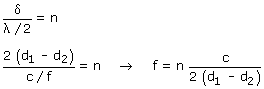
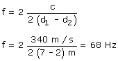

a)
Si en el punto C hay un máximo de amplitud sonora es porque en este punto se produce una interfe-rencia constructiva, luego la diferencia de camino tiene que ser un multiplo par de la semilongitud de onda

El menor valor posible para n es 2, por tanto la frecuencia mínima será:
|
|
 |